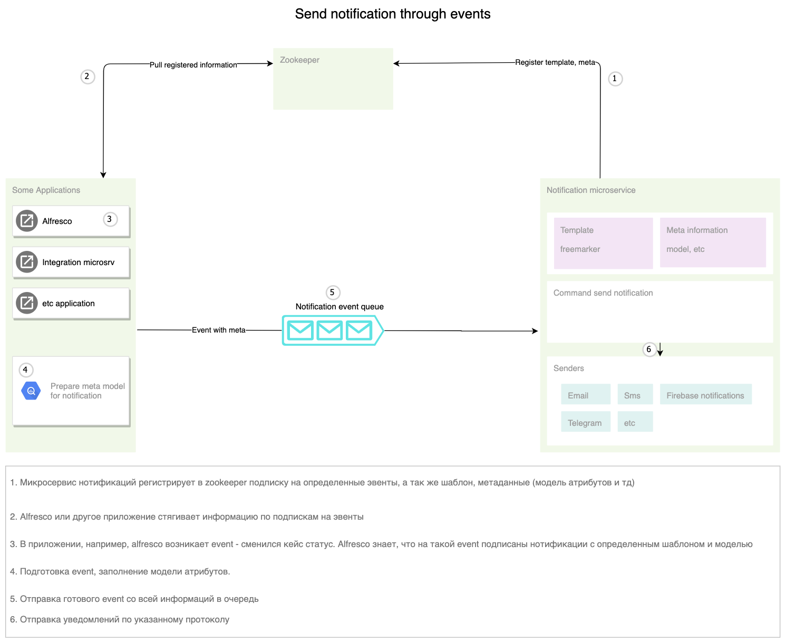

Работа с событиями (events)
Events 2.0
Реакция на события (events) строится на основе rabbitmq и моделей events в библиотеке - ecos-events. На стороне producer и consumer строится подключение к rabbitmq. Пример: отправка уведомлений как реакция на событие - сменился статус, изменился атрибут, назначилась задача и т.д.
Архитектура
Описание работы
События в ECOS позволяют менять атрибутивный состав, который нужен подписчику на событие, без модификации источника событий. При старте системы все подписчики регистрируют в Zookeeper список необходимых им событий по типам и атрибуты события, в которых они заинтересованы.
Приложение, которое может отправлять события подобного типа, видит, что в системе есть подписчики на эти события, и, при их возникновении, подготовив необходимый список атрибутов, отправляет их в Rabbit MQ (нетранзакционные слушатели) или напрямую слушателю (транзакционные слушатели) через синхронный запрос.
Атрибуты описываются в формате Records API и могут пользоваться всеми преимуществами данного API.
Транзакционные слушатели
Транзакционные слушатели позволяют реагировать на события «здесь и сейчас», не дожидаясь пока транзакция завершится. Подобные слушатели могут быть использованы, чтобы добавить валидацию состояния системы с возможностью прервать транзакцию или для любых других действий, которые должны выполниться в рамках транзакции.
Важная особенность - добавляя транзакционных слушателей вы автоматически добавляете жесткую зависимость генерирующих события микросервисов от микросервиса со слушателем. Т.е. если микросервис со слушателем недоступен, то микросервис, генерирующий события не сможет функционировать в полной мере.
Примеры
Подписка на событие с произвольными атрибутами (Kotlin):
eventsService.addListener<DataValue> {
withTransactional(true)
withEventType(RecordCreatedEvent.TYPE)
withAction {
println("Event for record with type: ${it["type"].asText()} Display name: ${it["disp"].asText()}")
}
withDataClass(DataValue::class.java)
withAttributes(mapOf("type" to "rec._type?id", "disp" to "rec?disp"))
}
Подписка на событие с произвольными атрибутами (Java):
Map<String, String> attributes = new HashMap<>();
attributes.put("type", "rec._type?id");
attributes.put("disp", "rec?disp");
eventsService.<DataValue>addListener(b -> {
b.withTransactional(true);
b.withEventType(RecordCreatedEvent.TYPE);
b.withActionJ((event) -> {
System.out.printf(
"Event for record with type: %s Display name: %s%n",
event.get("type").asText(),
event.get("disp").asText()
);
});
b.withDataClass(DataValue.class);
b.withAttributes(attributes);
return Unit.INSTANCE;
});